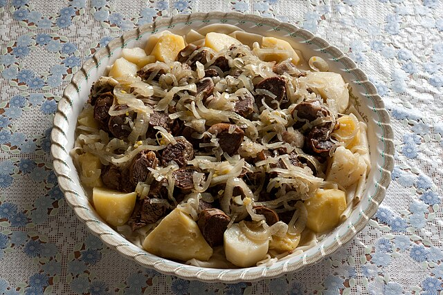

Et

It is probably the most popular dish in Kazakhstan. Typically this dish is
made with either horse meat or mutton. Beef is sometimes used but the
others are much more common. In fact horse meat is so common in Kazakhstan
that Olympians had to beg the Olympic committee to allow them to bring it
the games so that they could maintain their normal diet. Needless to say,
you can certainly enjoy this dish made with beef or lamb and be authentic.
Ingredients
- 2 1/2 lbs. lamb or beef with bone
- 1 large onion peeled and sliced into rings divided
- 1 bay leaf
- ground pepper
- Water to cover
- For the noodles:
- 2 eggs
- 3/4 to 1 cup water
- 1/2 teaspoon salt
-
plain flour - about 600 grams or you can use lasagna noodles as a quick
and easy alternative to making the noodles from scratch
Steps
-
Put your meat and 1/2 the onion in a deep enough dish to cover it with
cold water leaving enough space on the top so that it doesn't boil over.
-
Bring to the boil, constantly removing the foam, Reduce heat to simmer
when it starts to boil. Cover it.
-
Let it cook for about 2 1/2 hours or until the meat is tender and
falling off the bone.
- Meanwhile, prepare your noodle dough.
-
In a bowl mix the sifted flour (300-400 g), the eggs (whisk the eggs
before you add into flour), add salt and pour water until a dough is
formed.
- Knead pastry, adding flour or water as needed.
-
Knead the dough well, wrap in plastic wrap and leave for 20-30 minutes.
-
Sprinkle the work top with sifted flour and divide your dough into a few
small balls
-
Then keeping the worktop lightly covered with flour roll each piece of
pastry into a fairly thin layer.
-
Keep sprinkling with flour so that it doesn't stick to your hands or
work surface.
-
Cut into squares (10x10cm). Leave them on a worktop lightly covered with
flour. The pieces should not touch or they will stick together. By the
time you are ready to cook the noodles it should be dry a bit.
-
minutes before your meat is ready, add the other half of the onion (cut
in ring shapes), salt and pepper to taste, into your stock.
-
Remove the meat and bones, separate as you will only serve the tender
cooked meat.
- Bring the stock to a boil for about 7 or so minutes.
-
Now cook the noodles in batches in the same stock for about 7-8 minutes.
Sieve them out on to the big plate leaving the space in the center for
meat. Then add your meat chopped in bite size pieces and put it in the
center of the dish. Pour some broth over the meat.
- Sprinkle some chives and parsley to garnish over the top.
-
Strain the broth and serve in bowls as shorpa alongside the platter of
Beshbarmak
- Beshbarmak is served.
Source
TOP | Foundations |
Recipes